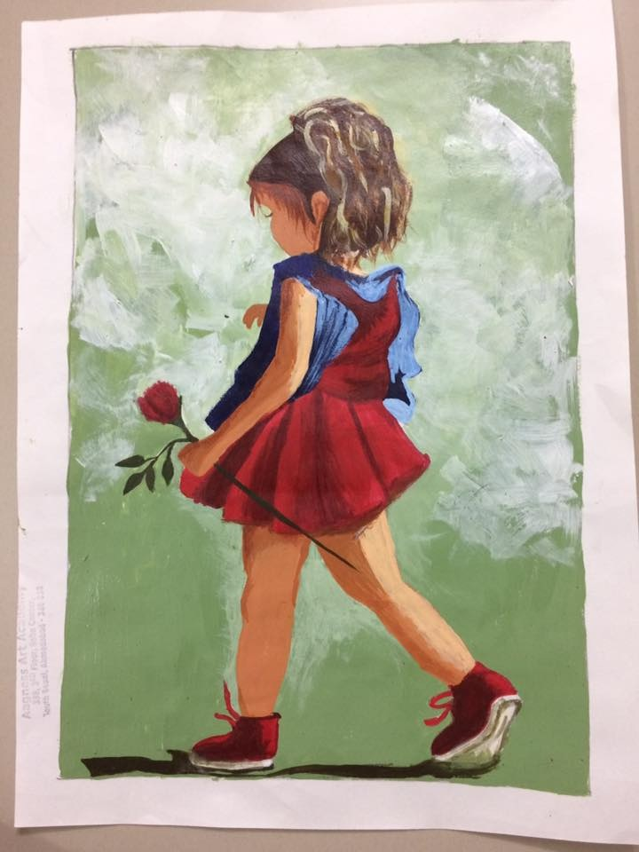
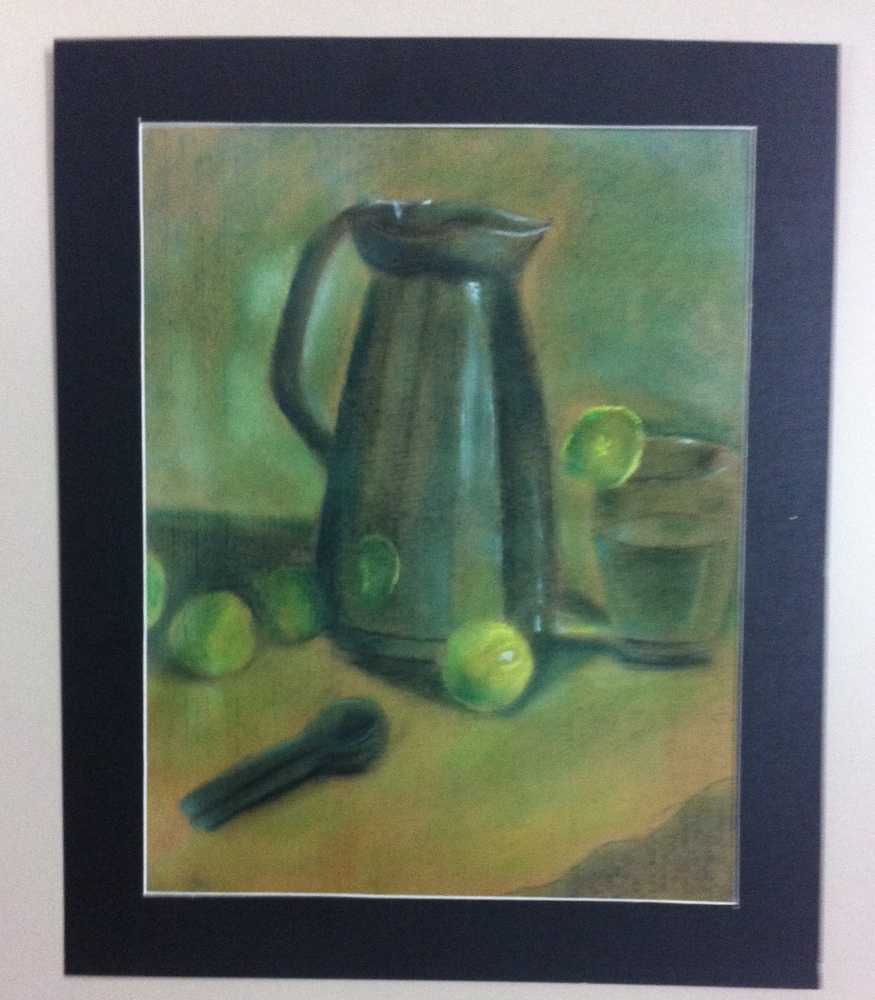

Bride
CHALK & PENCIL ON TONED PAPER
There’s something about the weight of jewelry and the lightness of a downward gaze.

Walking
GOUACHE ON PAPER
She doesn’t know anyone is watching. That’s the whole painting.
Green Study
SOFT PASTELS
The exercise of stillness — a pitcher, some limes, and patience.


Sovereign
ACRYLIC ON CANVAS
Color is the first emotion. The rest follows.

Somewhere Quieter
ACRYLIC ON CANVAS
A road I invented. A place I wanted to exist.